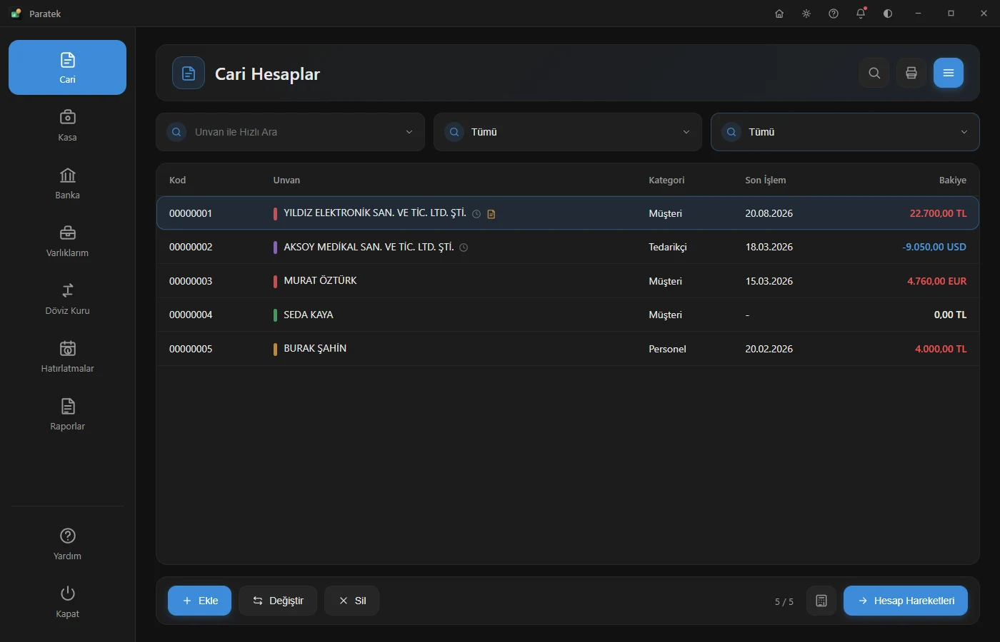
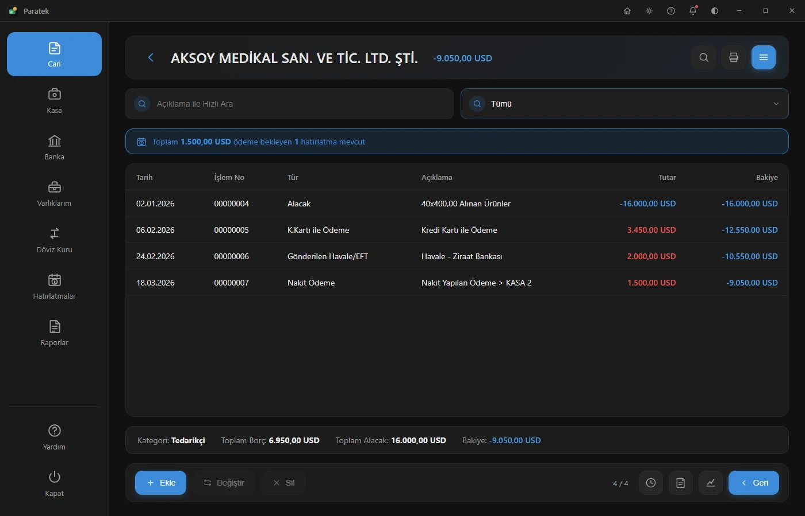
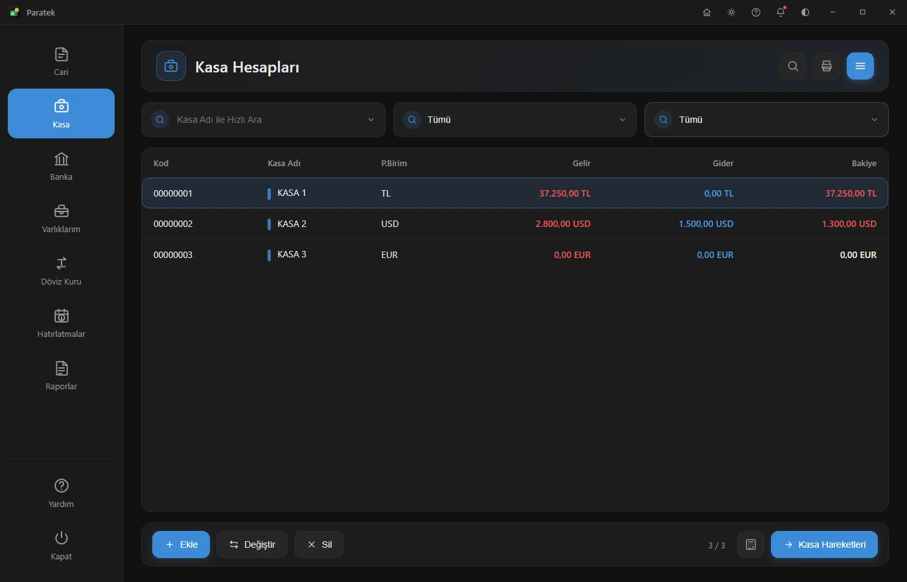
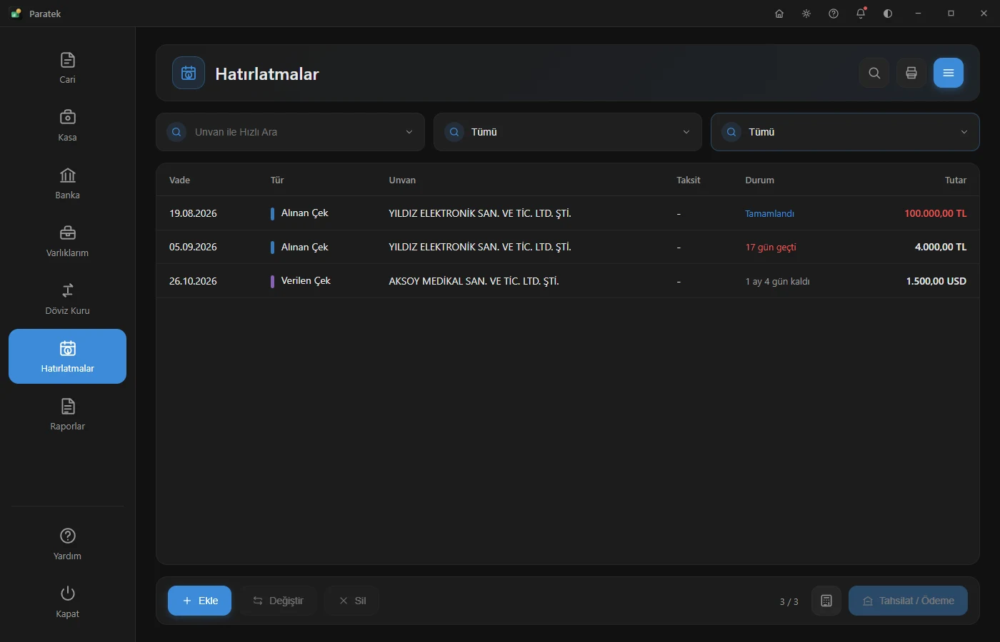
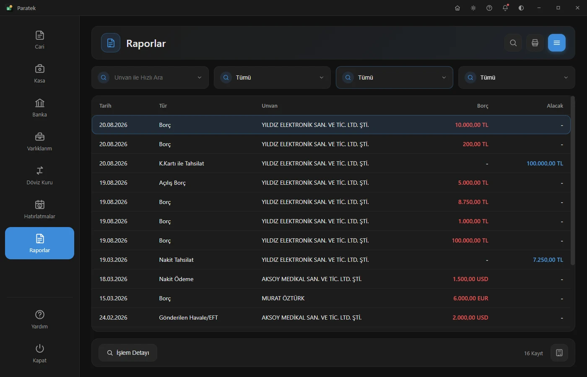
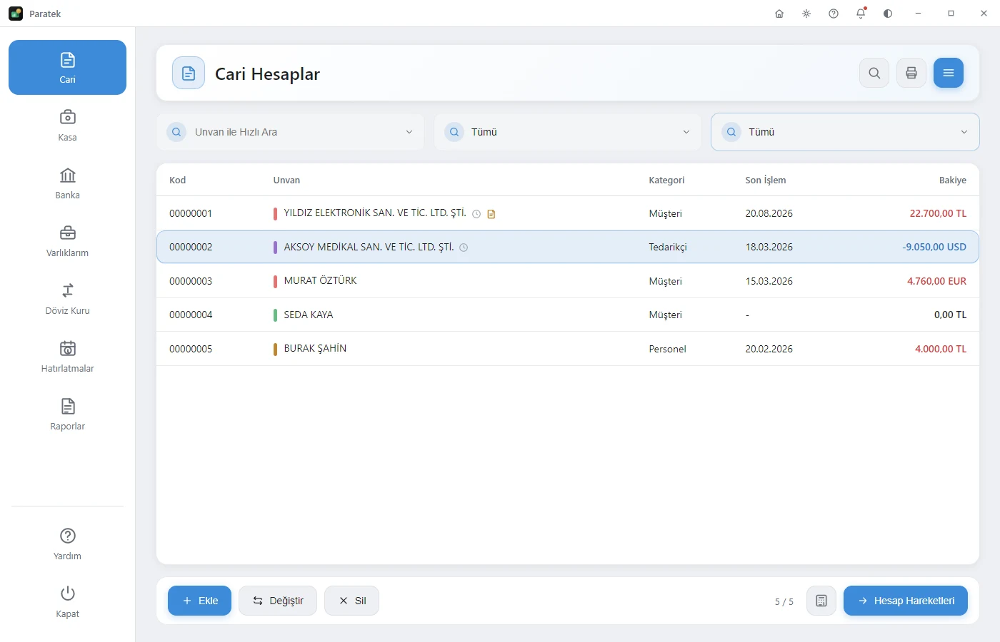

Finansal Yönetimde Yeni Nesil
Cari hesap, kasa, banka, hatırlatma ve raporlarınızı; sade, hızlı ve tamamen size özel tek bir masaüstü uygulamasında toplayın.

Eskiden
Cari hesaplar bir yerde, kasa hareketleri başka bir defterde, çek & senet vadeleri hafızada... Dağınık takip, unutulan ödemeler ve zaman kaybı.
Paratek İle
Tüm mali işlemleriniz tek ekranda; hatırlatmalar sizin yerinize takip eder, raporlar tek tıkla önünüze gelir. Sade, hızlı, güvenilir.
İşletmenizin tüm mali düzeni tek yerde
Her modül, gerçek işletme ihtiyaçları düşünülerek sade ve hızlı çalışacak şekilde tasarlandı.
Cari Hesaplar
Müşteri, tedarikçi ve personel hesaplarınızı kategorilere ayırın; bakiye, risk limiti ve hareket geçmişini tek ekranda görün.
Kasa & Banka
Nakit kasalarınızı ve banka hesaplarınızı TL, dolar ve euro üzerinden gerçek zamanlı takip edin.
Hatırlatmalar
Çek ve senet vadelerini asla kaçırmayın. Program açıldığında bekleyen ödeme ve tahsilatları anında bildirir.
Raporlar
Tarih aralığına ve kategoriye göre borç / alacak dökümü alın; işlem detaylarını tek tıkla inceleyin.
Varlıklar & Döviz
Demirbaş, araç ve gayrimenkullerinizi; güncel döviz kurlarıyla birlikte tek yerden izleyin.
Yedekleme & Güncelleme
Tüm verilerinizi tek dosyaya yedekleyin, dilediğinizde geri yükleyin. Yeni sürümler otomatik olarak bildirilir.
Paratek'i 2 dakikada tanıyın
Gerçek uygulamadan alınmış görüntüler ve seslendirmeyle tüm modüller.
Gerçek uygulamadan, gerçek görünüm
Aşağıdaki görüntülerin tamamı doğrudan çalışan Paratek uygulamasından alınmıştır.





Verileriniz sadece sizin
Paratek bulut bağımlısı değildir; verileriniz yalnızca sizin bilgisayarınızda kalır.
Lisanslı Kurulum
Her kurulum, cihaza özel üretilmiş bir lisans anahtarıyla etkinleştirilir; yetkisiz kullanım engellenir.
Yerel Veri Saklama
Cari, kasa ve banka kayıtlarınız yalnızca kendi bilgisayarınızda tutulur; hiçbir sunucuya gönderilmez.
Sıkılaştırılmış Paket
Uygulama, dijital olarak imzalanmış ve ek güvenlik önlemleriyle sıkılaştırılmış olarak dağıtılır.
Paratek'i ücretsiz indirin
Kurulum birkaç dakika sürer. Güncellemeler yayınlandıkça uygulama içinden otomatik olarak bildirilir.
Windows İçin İndirMerak Ettikleriniz
Tüm cari, kasa, banka ve hatırlatma kayıtlarınız yalnızca kendi bilgisayarınızda saklanır. Paratek herhangi bir bulut sunucusuna veri göndermez.
Lisans anahtarı kurulduğu cihaza özel üretilir. Farklı bir bilgisayarda kullanmak için ayrı bir lisans anahtarı gerekir.
Yeni bir sürüm yayınlandığında bildirim panelinde otomatik olarak görünür; tek tıkla indirip kurabilirsiniz.
Evet. Ayarlar > Yedekleme bölümünden tüm verilerinizi tek bir dosyaya kaydedip, istediğiniz an geri yükleyebilirsiniz.